Основная идея клиент-сервер состоит в разделении сетевого приложения на несколько компонентов, каждый из которых реализует специфический набор сервисов и обеспечивает совместный доступ к одной и той же информации из разных мест одновременно.
Компоненты такого приложения могут выполняться на разных вычислительных системах, выполняя серверные и/или клиентские функции. Это позволяет повысить надежность, безопасность и производительность сетевых приложений и сети в целом.
Изначально представляли доступ к гипертекстовым документам по протоколу HTTP (HyperText Transfer Protocol).
Сейчас поддерживают расширенные возможности, в частности работу с бинарными файлами: изображения, мультимедиа и т.п.
Например:
nginx свободный веб-сервер
Apache HTTP Server свободный веб-сервер
Apache Tomcat свободный веб-сервер
IIS от компании Microsoft
Предназначены для централизованного решения прикладных задач в некоторой предметной области.
Для этого пользователи имеют право запускать серверные программы на исполнение.
Использование серверов приложений позволяет снизить требования к конфигурации клиентов и упрощает общее управление сетью.
Серверы баз данных используются для обработки пользовательских запросов на языке SQL.
При этом СУБД находится на сервере, к которому и подключаются клиентские приложения.
Файл-сервер хранит информацию в виде файлов и представляет пользователям доступ к ней.
Как правило, файл-сервер обеспечивает и определенный уровень защиты от несанкционированного доступа.
Представляют услуги по отправке и получению электронных почтовых сообщений.
Представляют услуги по отправке и получению мгновенных сообщений.
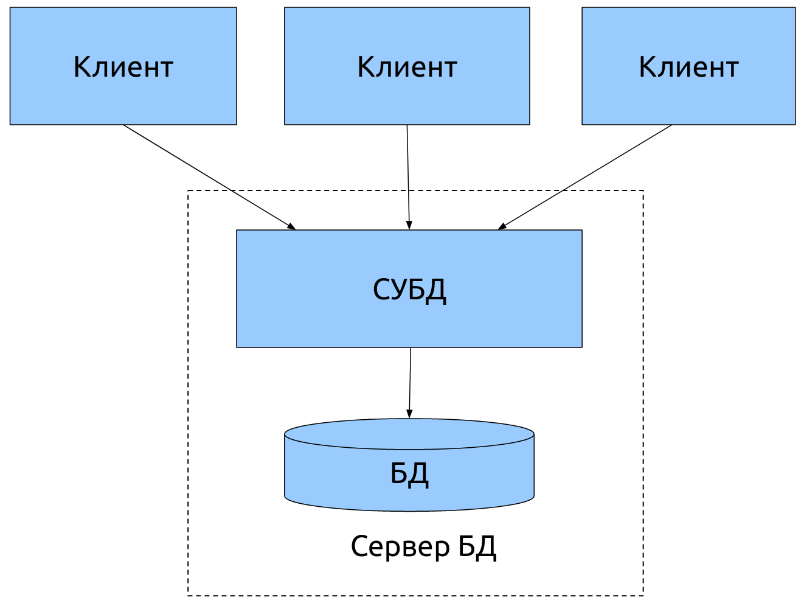
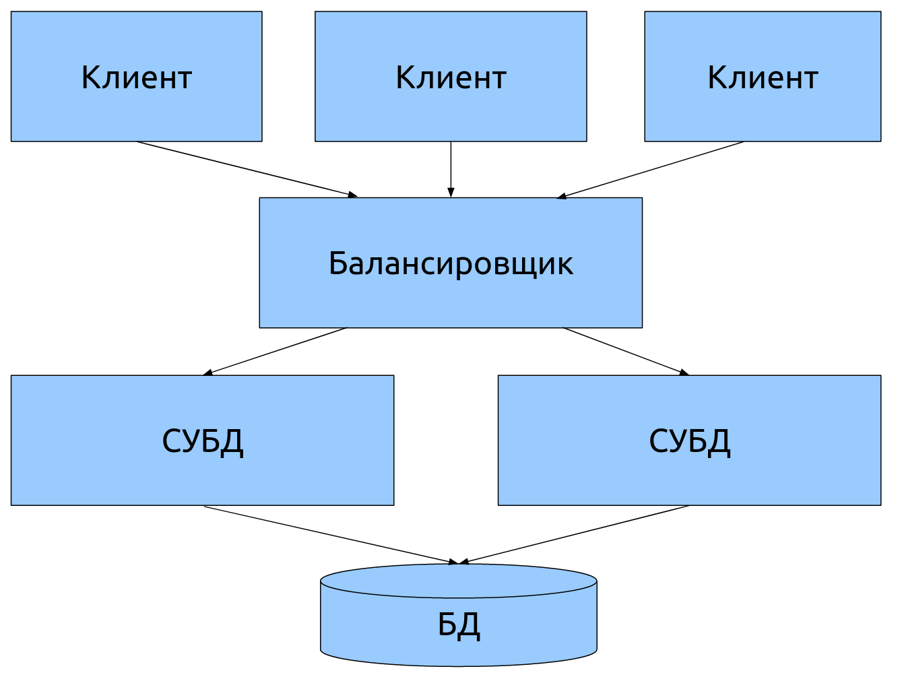
Двухуровневая архитектура используется в клиент-серверных системах, где сервер отвечает на клиентские запросы напрямую и в полном объеме, при этом используя только собственные ресурсы.
Т.е. сервер не вызывает сторонние сетевые приложения и не обращается к сторонним ресурсам для выполнения какой-либо части запроса.
Типичным сервером для двухуровневой архитектуры является сервер БД.
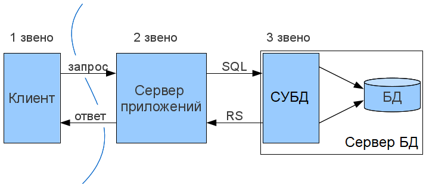
Представление данных — на стороне клиента.
Прикладной компонент — на выделенном сервере приложений (как вариант, выполняющем функции промежуточного ПО).
Управление ресурсами — на сервере БД, который и представляет запрашиваемые данные.
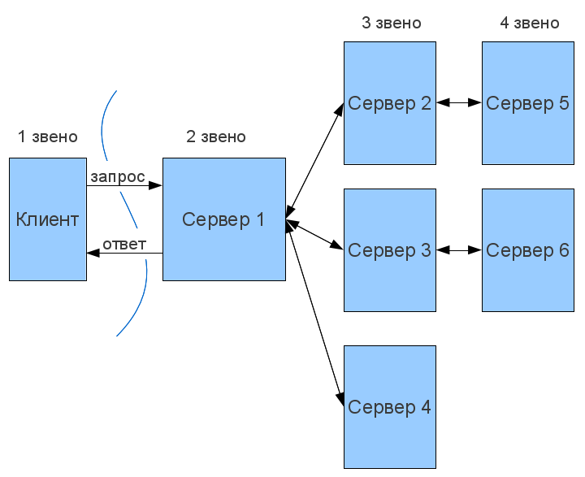
Серверами 2-го уровня, как правило, являются балансировщики, диспетчеры, шлюзы различных видов и т.п.
На 3-м и последующих уровнях, как правило, располагаются сервера приложений, web-сервера и т.п.
Последний уровень, как правило, различные сервера-поставщики данных (БД, web-сервисами и т.п.)
Двухуровневая архитектура проще, так как:
клиент эксплуатируется на мощной рабочей станции и разрабатывается с использованием мощных средств разработки
все запросы обслуживаются одним сервером БД
Менее надежна и предъявляет повышенные требования к производительности сервера.
Трехуровневая архитектура сложнее как в разработке, так и эксплуатации.
Эта архитектура представляет:
Высокую производительность (т.к. ресурсы серверов динамически распределяются между клиентами)
Высокую безопасность (т.к. защиту можно определить для каждого сервиса или уровня)
Высокую степень надежности (т.к. код и данные объединены)
Высокую степень гибкости
Высокую степень масштабируемости
Централизованное управление
Централизация
«падение» сервера приведет к недоступности программ для всех клиентов.
Защита информации
актуальна для любых сетевых решений, использующих инфраструктуру публичных сетей.
Стоимость разработки и обслуживания
ощутимо выше стоимости разработки монолитного приложения.
Производительность
зависит от производительности серверной части, что требует значительных затрат на «железо»
Расположение компонентов на стороне клиента или сервера определяет следующие основные модели их взаимодействия в рамках двухуровневой архитектуры:
сервер терминалов — распределенное представление данных;
файл-сервер — доступ к удаленной базе данных и файловым ресурсам;
сервер БД — удаленное представление данных;
сервер приложений — удаленное приложение.
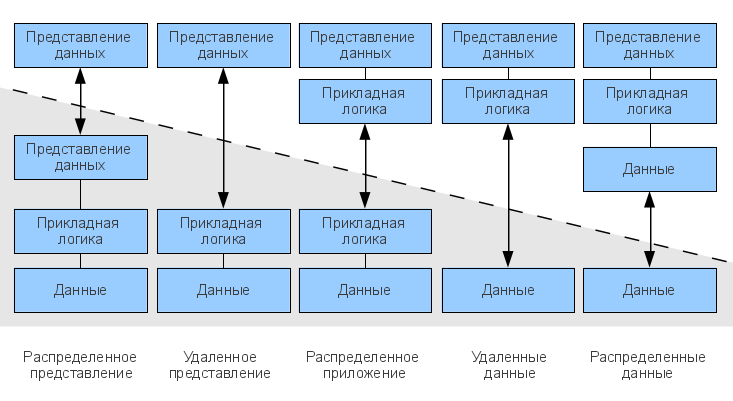
Этот термин определяет клиента, вычислительных ресурсов которого достаточно лишь для запуска необходимого сетевого приложения через web-интерфейс.
Пользовательский интерфейс такого приложения формируется, например, средствами HTML и вся прикладная логика выполняется на сервере.
Для работы тонкого клиента достаточно лишь обеспечить возможность запуска web-браузера, в окне которого и осуществляются все действия.
По этой причине web-браузер часто называют "универсальным клиентом".
Программно-аппаратной платформой такого клиента является рабочая станция или персональный компьютер, работающие под управлением собственной дисковой операционной системы и имеющие необходимый набор программного обеспечения.
Непосредственно же под толстым клиентом подразумевается клиентское сетевое приложение, запущенное под управлением локальной ОС.
Такое приложение совмещает компонент представления данных и компонент прикладной логики.
Сервер приложений — это сервисная программа, которая обеспечивает доступ клиентов к прикладным программам, выполняющимся на сервере.
Сервер приложений обычно выделяется как среднее звено в трехуровневой (многоуровневой) клиент-серверной архитектуре
Сервер приложений предоставляет среду, в которой прикладные программы могут работать, независимо от того, что и как именно они делают.
Серверы терминалов представляют среду для удаленного выполнения программ, в качестве которой выступает сама операционная система.
Доступ к ним осуществляется по протоколам удаленного управления (telnet, ssh, RDP, VNC и т. п.) из клиентского ПО (эмулятор терминала, средства управления удаленным рабочим столом и т.п.)
Управление запущенной программой выполняется через эмулируемый на клиенте пользовательский интерфейс (текстовый или графический) операционной системы.
На серверной стороне взаимодействие программ с ОС реализуется через системные вызовы.
Управление также осуществляется средствами операционной системы.
Разработка может вестись на любом языке, доступном в конкретной ОС.
Общий шлюзовой интерфейс (CGI) — технология доступа к приложениям через веб-сервер.
Отличия от сервера терминалов здесь в том, что пользовательский интерфейс предоставляется в виде веб-страниц.
Запросы веб-клиентов, обращенные к программам, размещенным в выделенном каталоге (как правило cgi или cgi-bin) перенаправляются на их вход через стандартный поток ввода (stdin).
Результаты выполнения в виде гипертекста приложение возвращает веб-серверу через stdout.
Контейнер сервлетов — один из архитектурных компонентов J2EE, представляющий окружение для выполнения сервлетов.
Сервлет — это Java-приложение, выполняющееся на стороне сервера (в отличие от апплета).
Контейнер сервлетов может работать как полноценный самостоятельный сервер, но чаще используется совместно с другим серверным ПО.
Обеспечивает обмен данными между сервлетом и клиентами, берёт на себя выполнение таких функций, как создание программной среды для функционирующего сервлета, идентификацию и авторизацию клиентов, организацию сессии для каждого из них.
Сервер приложений J2EE — реализация системы в соответствии со спецификацией J2EE, обеспечивающая работу модулей с логикой конкретного приложения.
Включает в себя как минимум следующие сервисы:
EJB-контейнер, который поддерживает автоматическую синхронизацию Java-объектов с базой данных (CMP — container managed persistence, BMP — bean managed persistence);
JMS — сервис доставки сообщений между компонентами и серверами;
JSF
Включает в себя как минимум следующие сервисы:
Управление ресурсами (доступ к СУБД, файловой системе, почтовому серверу и т. д.);
Безопасность и защита данных;
Поддержка транзакций (в том числе и распределённых, двухфазных).
веб-сервер
сервлет-сервер;
поддержка веб-сервисов.
Язык Python, получивший популярность во многом благодаря Google, является основным средством разработки для сервера веб-приложений Zope.
Для сценариев на языке PHP, широко используемом для создания веб-сайтов, компания Zend Technologies (разработчик самого языка PHP) создала сервер приложений Zend Server.
Компания Microsoft представляет собственные решения для поддержки бизнес-логики и сервисной инфрастуктуры на основе ОС Windows Server и технологии .NET Framework. Основным средством разработки является язык C#. В качестве сервера приложений/WEB сервера выступает IIS.
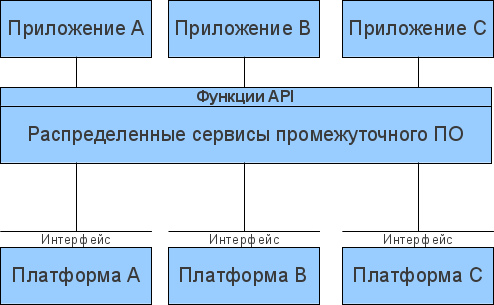
Промежуточное программное обеспечение (middleware) — это класс программного обеспечения, предназначенного для объединения компонентов распределенного клиент-серверного приложения или целых сетевых приложений в единую информационную систему.
реализация и поддержка выполнения бизнес-логики
прозрачный доступ к другим сетевым сервисам и приложениям;
обеспечение независимости функционирования от других сетевых сервисов;
обеспечение высокой надежности и постоянной готовности.
Программное обеспечение для межпрограммного взаимодействия
Программное обеспечение доступа к базам данных.
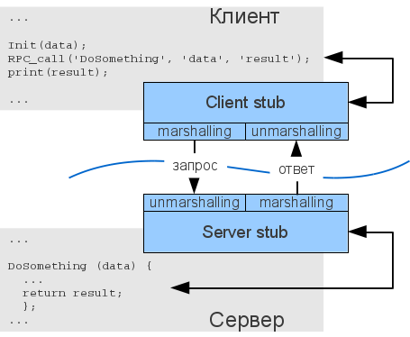
Remote Procedure Call - Вызов удаленных процедур- RPC
Развитие RPC привело к появлению web-сервисов
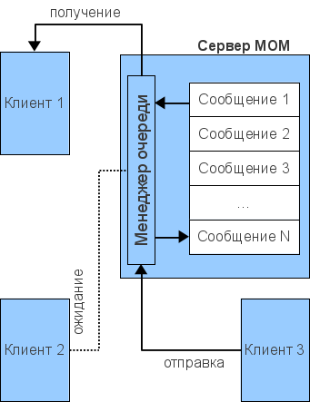
Message-Oriented Middleware - MOM - Сервисы обработки сообщений
надежная доставка сообщений (reliable message delivery) — система MOM гарантирует, что в процессе обмена ни одно сообщение не будет утеряно;
гарантированная доставка сообщений (guaranteed message delivery) — сообщение доставляется адресату немедленно или через заданный промежуток времени, не превышающий определенного значения (в случае, если сеть в данный момент не доступна);
застрахованная доставка сообщений (assured message delivery) — каждое сообщение доставляется один раз.
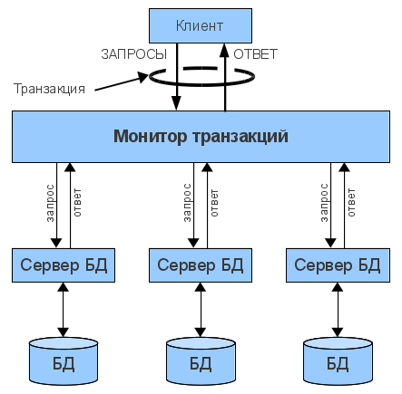
Transaction Processing monitors - TP-monitors - Мониторы обработки транзакций
Атомарность (Atomicity) – операции транзакции образуют неделимый, атомарный блок, который либо выполняется от начала до конца, либо не выполняется вообще. При невозможности выполнения транзакции происходит откат к исходному состоянию;
Согласованность (Consistency) – по завершении транзакции все задействованные ресурсы находятся в предопределенном и согласованном состоянии;
Изолированность (Isolation) – одновременный доступ транзакций различных приложений к разделяемым ресурсам координируется таким образом, чтобы исключить их влияние друг на друга;
Устойчивость (Durability) – независимо от проблем на нижних уровнях (к примеру, обесточивание системы или сбои в оборудовании) изменения, сделанные успешно завершённой транзакцией, должны остаться сохранёнными после возвращения системы в работу
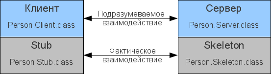
Distributed object systems - Распределенные объектные системы
CORBA (Common Object Request Broker Architecture, типовая архитектура брокера объектных запросов) — открытый стандарт, разработанный группой Object Management Group (OMG), который определяет интерфейсы между сетевыми объектами, позволяющие им работать совместно.
Брокеры объектных запросов (object request brokers, ORB), созданные в соответствии с CORBA, представляют интерфейсы для разработки объектно-ориентированных систем «клиент-сервер».
Microsoft COM (Component Object Model, компонентная объектная модель) — это семейство технологий, предназначенных для организации взаимодействия Windows-приложений (см. MSDN: The Component Object Model). В это семейство входят COM+, DCOM (Distributed COM) и ActiveX Controls. Microsoft позиционирует COM как платформу для разработки повторно используемых (re-usable) компонентов приложений. В случае DCOM — компонентов распределенных клиент-серверных систем.
EJB (Enterprise JavaBeans) — технология, разработанная Sun Microsystems для корпоративных решений на платформе Java EE. Спецификация EJB описывает архитектуру серверных компонентов и порядок их использования в клиент-серверных приложениях. Эта технология упрощает разработку распределенных систем на основе Java и обеспечивает наибольшую переносимость Java-приложений.
Поддержка стандартов языка SQL.
Поддержка встроенного языка хранимых процедур (PL/SQL, T-SQL).
Средства СУБД, позволяющие выполнять импорт данных из внешних источников.
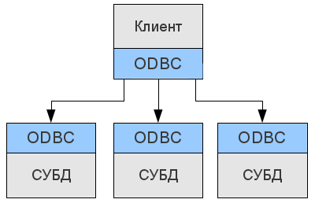
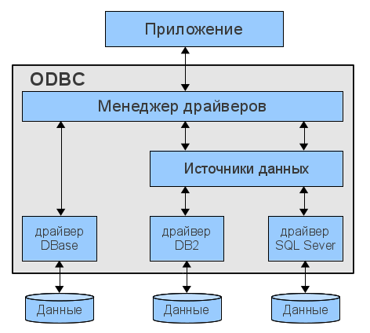
Open DataBase Connectivity - ODBC - открытое соединение с БД
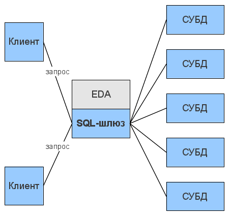
Event-Driven Architecture - EDA - событийно-управляемая архитектура
Это концепция управления корпоративной информационной системой на основе событий, возникающих в бизнес-процессе.
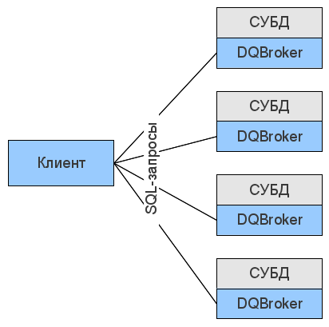
Distributed Query Broker - DQB - брокер распределенных запросов
Децентрализованное (в отличие от EDA) решение для доступа к БД на основе ORB.